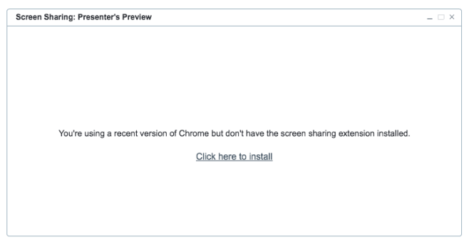
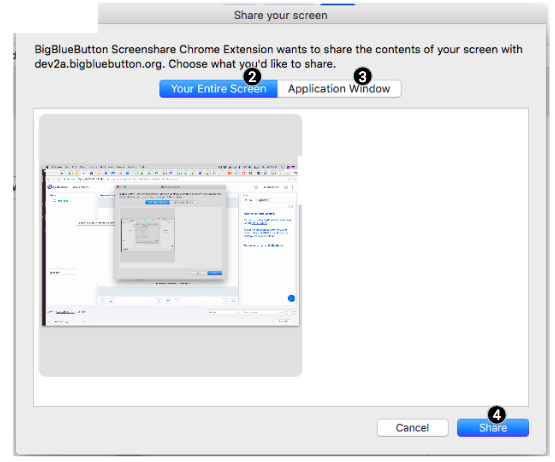
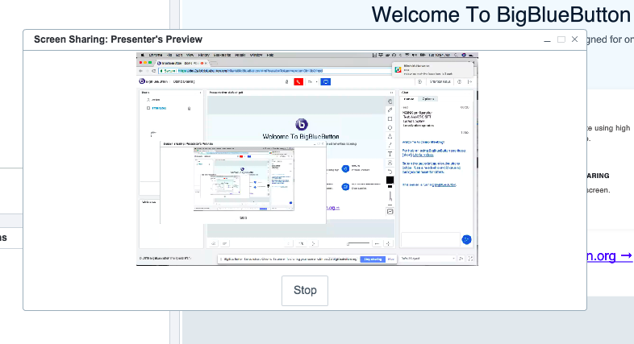
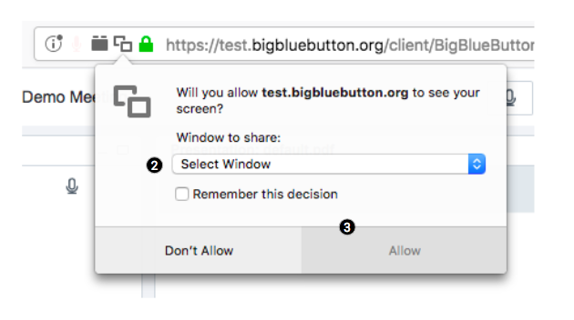

Chrome and FireFox support sharing your screen directly with built-in web real-time communications (WebRTC). Using WebRTC you don't need to have Java installed to share you screen. WebRTC screen sharing also allows you to share your screen from a ChromeBook.
BigBlueButton will give you a choice of using ether WebRTC or Java. (The choice of Java requires installation of Java runtime.)
We recommend trying WebRTC first.

Click WebRTC [1]. The next steps depend on whether you are using Crome or FireFox.
The first time you start WebRTC screen sharing using Chrome you will be prompted to install a Chrome extension. The extension will give Chrome permission to share your screen with the remote site.
If you see the above, click Click here to install and follow the prommpts to install the extensions. Once the extension in installed, you'll see Chome's options to share your screen.

You can select either Your Entire Screen [2] or Application Window [3] to choose a specific application window. Once you've made a selection, click Share [4] to start sharing. You'll see the Screen Sharing Presenter's Preview window and, after a few moments, a thumbnail of your shared screen/window.
At this point all remove viewers can see your screen as well. You can stop the screen sharing by clicking the Stop button.
FireFox will prompt you to select an application window to share.
Choose a window to share from Select Window pop-up menu [2] and then click Allow [3]. After a few moments, you'll see a thumbnail of your screen sharing in the Screen Sharing Presenter's Preview window.
At this point all remove viewers can see your screen as well. You can stop the screen sharing by clicking the Stop button.